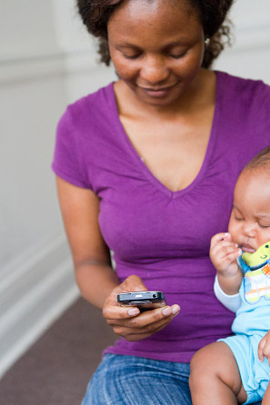

MAMA SA welcomes its 450,000th user!
There is excitement in the Praekelt Foundation MAMA South Africa camp. MAMA South Africa was launched in 2013, and MAMA’s user numbers have been climbing since then. Growth, it seems, is relentless. MAMA’s unique visitor numbers through the MAMA mobi site on Vodafone Live! was over 255,000 in August 2014. Combined with steady user growth across the MAMA SMS, MAMA USSD and MAMA Mxit channels, the programme celebrated its 450,000 user in August 2014.
Says Marcha Bekker of Praekelt Foundation Lead implementors of the MAMA Programme in South Africa: "We are encouraged by this steady growth in user numbers especially on the MAMA community channels, like Mobi, Vodafone Live and Mxit. This proves that mothers and momstobe value the sense of community and sense of belonging that they find on these platforms, where they can not only engage with great content, but also with other mothers."
MAMA, the Mobile Alliance for Maternal Action was launched by founding partners Johnson & Johnson and USAID, in 2010 with the aim to use mobile technology to support new moms and pregnant women in three implementation countries: Bangladesh, South Africa and India. The three countries were chosen as implementation sites for MAMA, for good and bad reasons: “Good” stems from the fact that in these countries, mobile penetration is at record highs and is still growing making mobile technologies the opportune way in which to reach moms with lifesaving information. The “Bad” refers to unacceptable high rates of maternal and child mortality and places where the challenge of meeting MDGs 4 and 5 seems to be slipping out of reach....
MAMA South Africa officially launched in the leadup to Mother’s Day, in May 2013. MAMA South Africa uses mobile platforms to inform and empower mothers to adopt healthy behaviours and encourages them to access maternal and child health services and information.
This includes advice, resources and information that encourages early antenatal care, assists mothers in understanding how to prevent HIV transmission to their babies, and promotes exclusive breastfeeding for all mothers. MAMA leverages a variety of platforms and channels, because the point is not to give moms something new, but to reach them where they are, right now. With its unique, multichannel approach and focus on local issues like HIV during pregnancy, South African mothers are seeing the value of signing up to MAMA. Channels and methods that have not have been harnessed globally (for instance, the Mobi site and an Interactive Quiz system), have proved immensely popular in the local context. Of course, Praekelt Foundation is no stranger to using mobile to power community change in ways that can be scaled up. In fact, high user numbers for any Foundation project are a musthave.
Says Maya Makanjee, Vodacom’s Chief Officer: Corporate Affairs: "Vodacom is encouraged by the phenomenal increase in MAMA users on the Vodafone Live! platform. This confirms our belief that a mobile phone can be used very successfully in the delivery of critical maternal health information, helping reduce maternal and child mortality incidents."
South Africa’s expectant and new moms can currently benefit from MAMA in one of four ways:
- Vodacom customers can access MAMA mobi content from Vodafone Live!, under “More Menu’s” and “Health and Lifestyle”, or simply go to live.vodafone.com/mama (Free to Vodacom customers)
- NonVodacom customers can access the MAMA mobi content by visiting www.askmama.mobi from their Internetenabled mobile phone. (Normal data charges apply)
- Expectant and new mothers can access a weekly, informational quiz, also linked to the stage of pregnancy an expectant mother is at or the age of her baby. Dial *120*2112# to register, and redial the same number every “MAMA Monday” for the weekly quiz (cost 20c per 20 seconds)
- Prospective mothers can also access MAMA on MXit, by going to Mxit, and then to Discover Mxit Apps & Games Apps by Category Health & Advice MAMA.
The MAMA SMS channel has supported over 12,000 mothers from the greater Johannesburg region, but has now merged with the new National Department of Health’s maternal health programme, MomConnect. This programme officially launches on 21 August 2014 and will support an estimated 1 million pregnant women in South Africa, each year.
MAMA’s impact on the lives of South African moms is expressed best by a MAMA user: “his MAMA is giving us (information about) nutritious diet (and about) which veg or fruit to take during pregnancy time or trying time, so follow it.”
MAMA Global Funders & Partners


MAMA SA Funders & Partners